- 所有内容
- 章节开头
- 章节末尾
- 章节练习
第一章 : 第一节
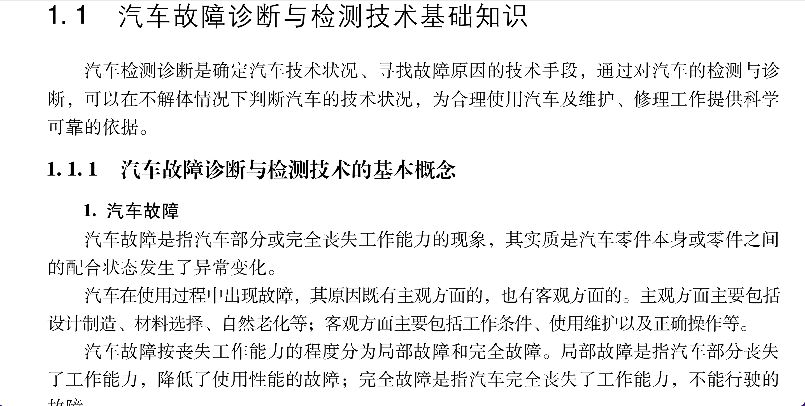
汽车服务工程《汽车故障诊断与检测技术》
汽车故障诊断与检测技术基础知识
第一章 : 第三节

汽车服务工程《汽车故障诊断与检测技术》
常用故障诊断与检测设备介绍
第二章 : 第一节
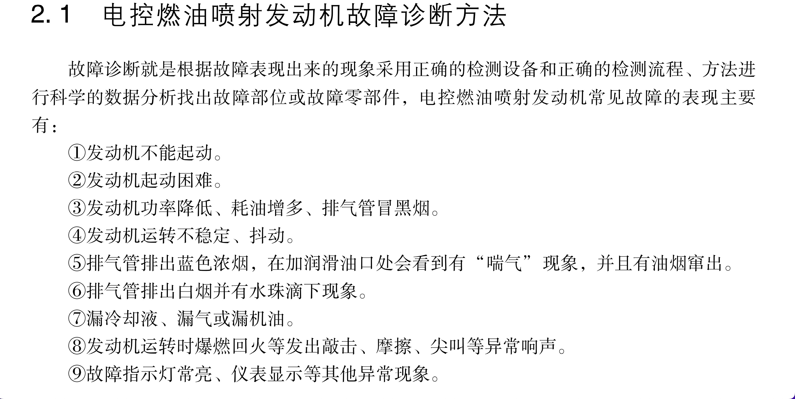
汽车服务工程《汽车故障诊断与检测技术》
电控燃油喷射发动机故障诊断方法
第二章 : 第二节
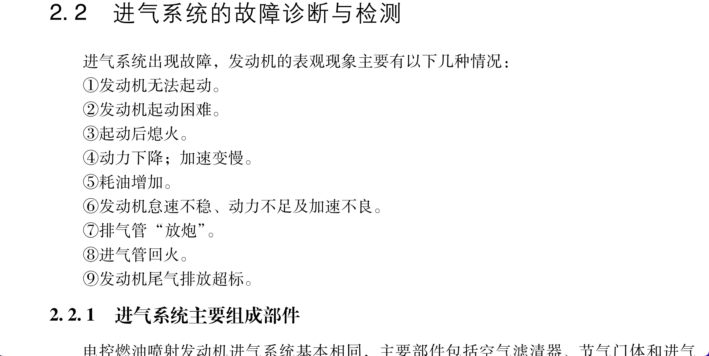
汽车服务工程《汽车故障诊断与检测技术》
电控燃油喷射发动机故障诊断方法
第二章 : 第三节
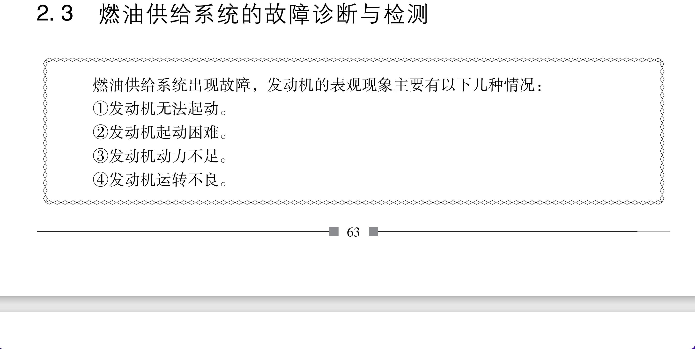
汽车服务工程《汽车故障诊断与检测技术》
燃油供给系统的故障诊断与检测
第二章 : 第四节
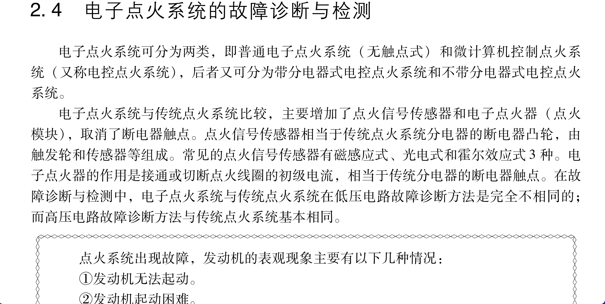
汽车服务工程《汽车故障诊断与检测技术》
电子点火系统的故障诊断与检测
第二章 : 第五节

汽车服务工程《汽车故障诊断与检测技术》
发动机排放控制系统的故障诊断与检测
第二章 : 第六节
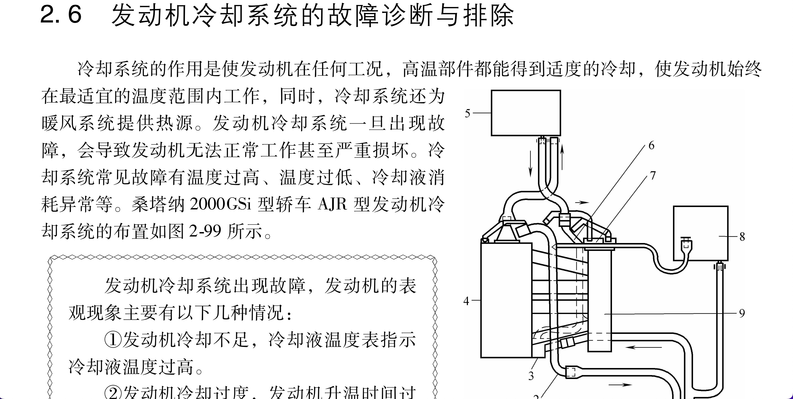
汽车服务工程《汽车故障诊断与检测技术》
发动机冷却系统的故障诊断与排除
第二章 : 第七节
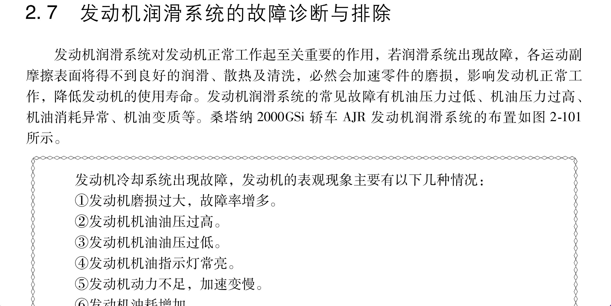
汽车服务工程《汽车故障诊断与检测技术》
发动机润滑系统的故障诊断与排除
第二章 : 第八节
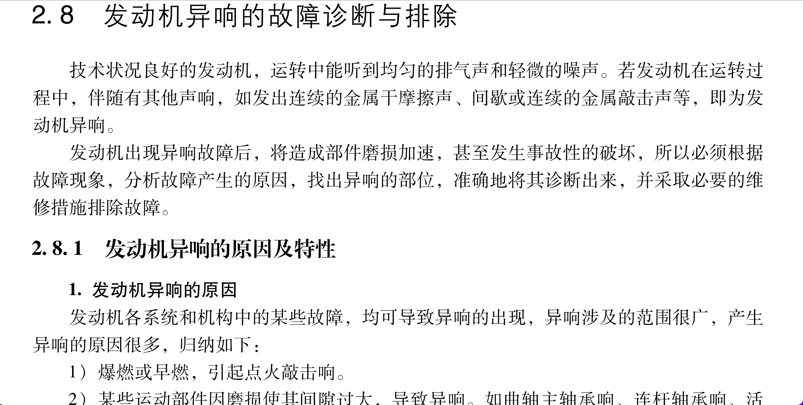
汽车服务工程《汽车故障诊断与检测技术》
发动机异响的故障诊断与排除
第三章 : 第一节
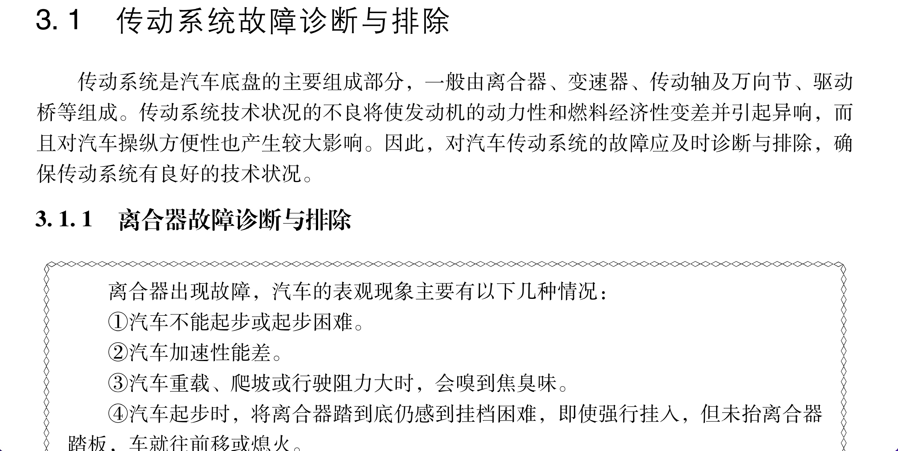
汽车服务工程《汽车故障诊断与检测技术》
传动系统故障诊断与排除
第三章 : 第二节
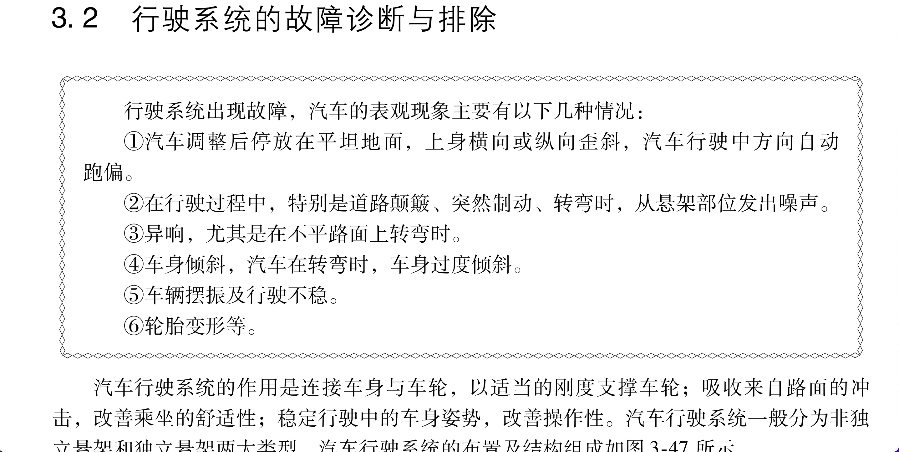
汽车服务工程《汽车故障诊断与检测技术》
行驶系统的故障诊断与排除
第三章 : 第三节
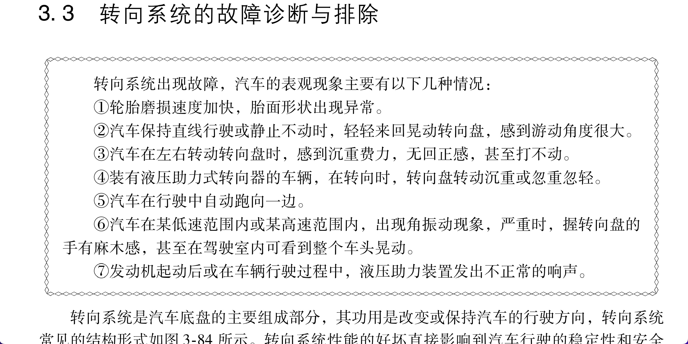
汽车服务工程《汽车故障诊断与检测技术》
转向系统的故障诊断与排除
第三章 : 第四节
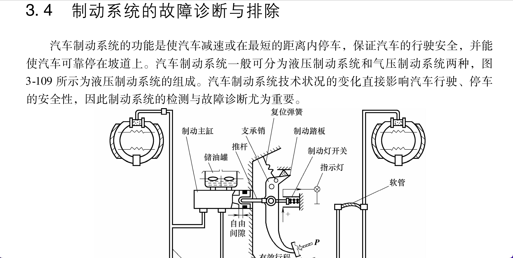
汽车服务工程《汽车故障诊断与检测技术》
制动系统的故障诊断与排除
第四章 : 第一节
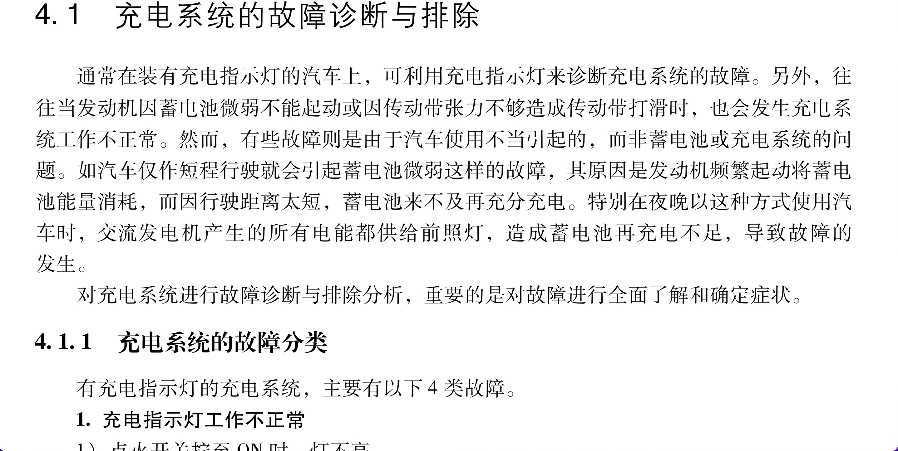
汽车服务工程《汽车故障诊断与检测技术》
充电系统的故障诊断与排除
第四章 : 第二节
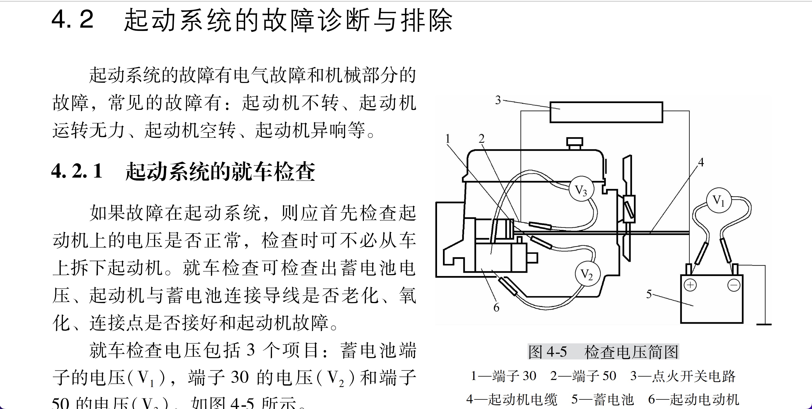
汽车服务工程《汽车故障诊断与检测技术》
起动系统的故障诊断与排除
第四章 : 第三节
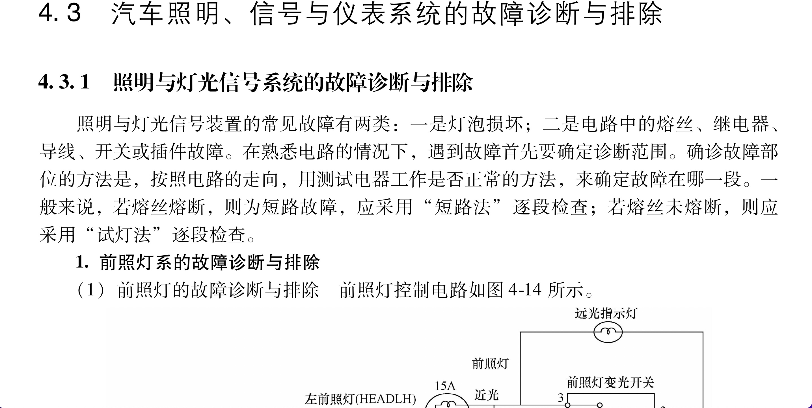
汽车服务工程《汽车故障诊断与检测技术》
汽车照明、信号与仪表系统的故障诊断与排除
第四章 : 第四节
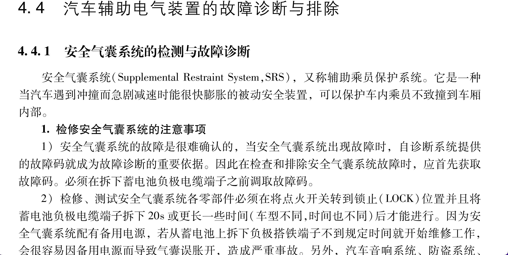
汽车服务工程《汽车故障诊断与检测技术》
汽车辅助电气装置的故障诊断与排除
第五章 : 第一节
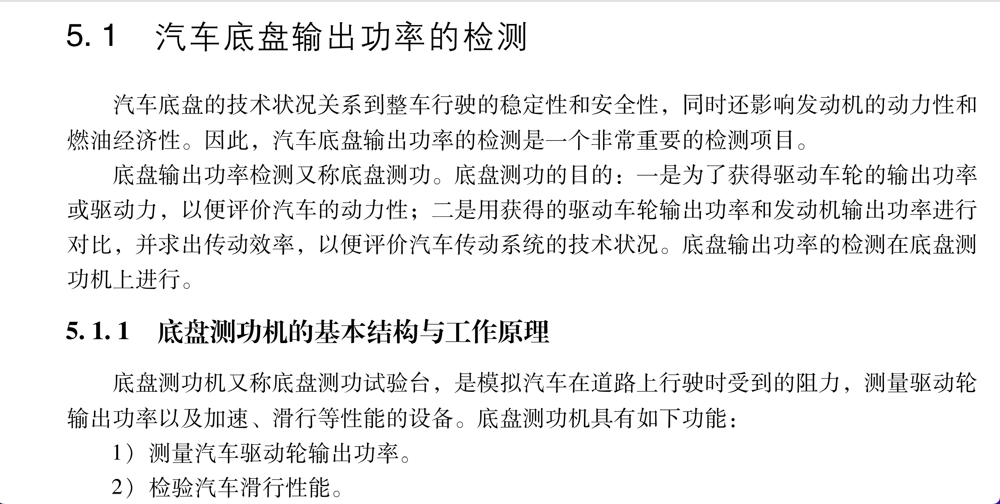
汽车服务工程《汽车故障诊断与检测技术》
汽车底盘输出功率的检测
第五章 : 第二节
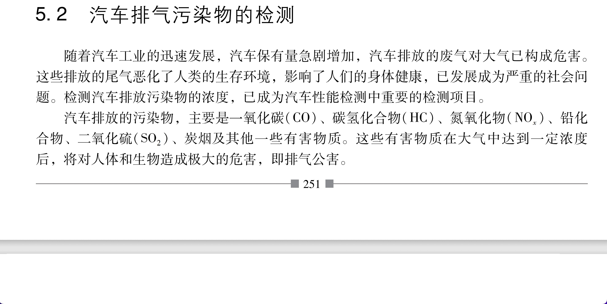